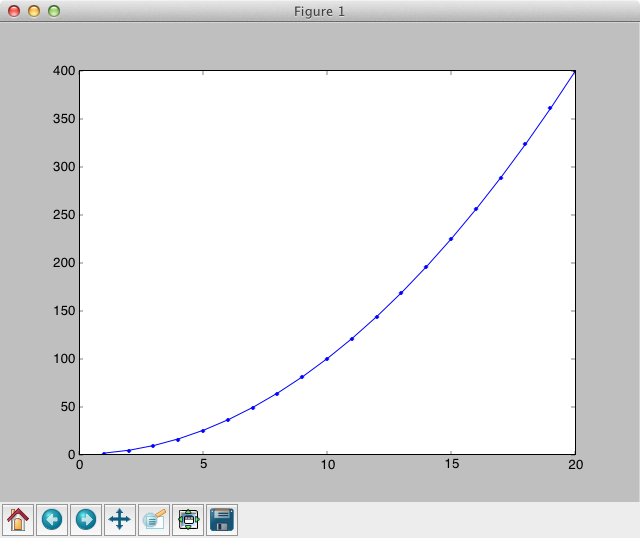

This is a short course, so you have to come prepared and keep pace with the course. To attend the first lecture you have to go through some prerequisites. These lectures are not for absolute beginners, e.g., those who have not seen a computer before. If you are not equipped with any of those listed below it will be difficult for you to follow what is going on.
!*********************************!
program hello
write(*,*)'hello world'
end program
!*********************************!
!*********************************!
program square
integer, parameter :: N=20
integer :: i,j
do i=1,N
j=i*i
write(*,*) i,j
enddo
end program
!*********************************!
Compile and run each of these two program in your laptop. In the first case you should see the text "hello world". In the second case two columns of integers. You can redirect the output from the second program to a file and the plot the two columns of the file in the software of you choice to see a parabola. Below is how I do it.
> gfortran square.f90
> ./a.out
41 1
2 4
3 9
4 16
5 25
6 36
7 49
8 64
9 81
10 100
11 121
12 144
13 169
14 196
15 225
16 256
17 289
18 324
19 361
20 400
Then I want to write the output to a fie (redirect), and plot it. I am using a combination of numpy,scipy and matplotlib to do this. You can install them in your computer and use them. In ubuntu this can be done through synaptic. Otherwise you are welcome to use any other software you know of.
>./a.out >sq
> ipython --pylab
Python 2.6.5 (r265:79063, Apr 16 2010, 13:09:56)
Type "copyright", "credits" or "license" for more information.
IPython 0.10 -- An enhanced Interactive Python.
? -> Introduction and overview of IPython's features.
%quickref -> Quick reference.
help -> Python's own help system.
object? -> Details about 'object'. ?object also works, ?? prints more.
Welcome to pylab, a matplotlib-based Python environment.
For more information, type 'help(pylab)'.
In [2]: pp=numpy.loadtxt('sq')
In [4]: plot(pp[:,0],pp[:,1],'o-')
Out[4]: []
The output of the plot is in a separate window which is shown in Fig. 1
